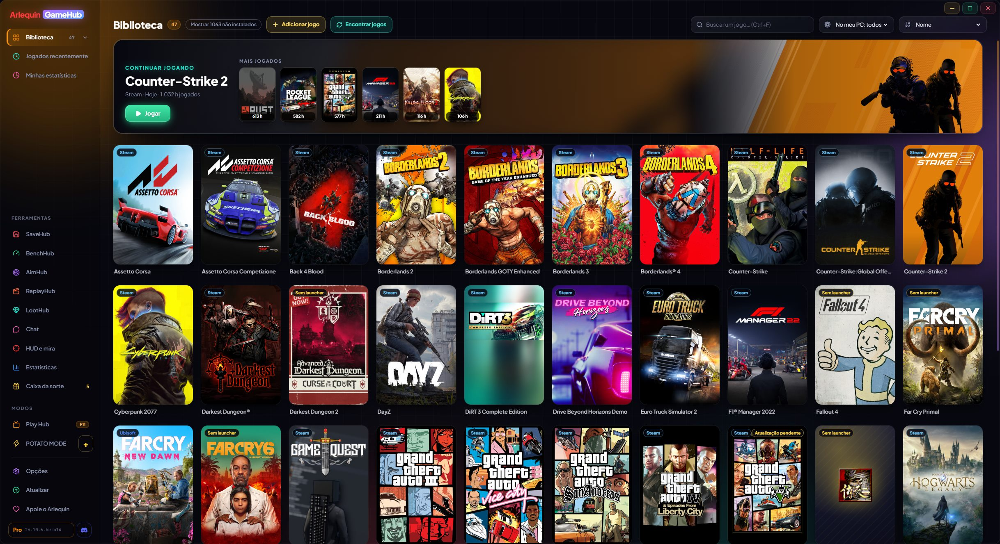

Toda a sua biblioteca em um só lugar
Steam, Epic, GOG, Xbox, Ubisoft, EA, Battle.net, Amazon, Rockstar e jogos sem launcher, juntos.
O GameHub olha o que você já tem no PC: as pastas e os arquivos que o launcher de cada loja guarda. Assim ele encontra seus jogos instalados e também os que você tem mas não instalou, com capas e as horas jogadas. As horas contam mesmo se você abrir o jogo pelo launcher dele.
Na barra lateral, clicar em Biblioteca abre suas lojas com quantos jogos você tem em cada uma (também as que têm o app instalado mesmo sem jogos ainda). Você pode ordenar por nome, por último jogado, por horas ou por tamanho, buscar na hora e ver o que jogou recentemente.
Jogos sem launcher (um emulador, um jogo do itch.io…) são adicionados com o botão “Adicionar jogo”, ou você diz ao GameHub em quais pastas estão seus jogos avulsos e ele os encontra sozinho. Ele busca a capa oficial da Steam também para jogos de outras lojas, adicionados à mão ou retirados da loja; se não houver, usa o ícone do jogo, e você sempre pode colocar sua própria imagem.
Um jogo que você tem em várias lojas ou na mesma pasta aparece só uma vez. E se a Steam estiver atualizando um jogo, você vê no card dele (“Atualizando 45%” ou “Atualização pendente”).
Na beta, as atualizações da Steam e os downloads da Epic (instalar ou atualizar) mostram embaixo do card, onde fica “Jogar”, a % real, a velocidade e o tempo restante; ao clicar, abre a Steam ou a Epic. Se um download parar de avançar, aparece “Pausado”.
Na beta, novas lojas: Riot (League of Legends, VALORANT, TFT…), HoYoPlay (Genshin, Star Rail, Zenless…), Wargaming (World of Tanks…), Ankama (Dofus, Wakfu…) e Gameforge (Metin2, NosTale…), com as horas de cada personagem de Dofus. Os jogos de console do GOG Galaxy (PlayStation, Nintendo) têm sua própria seção e podem ser ocultados, e em Opções → Biblioteca você tira as lojas que não quer e escolhe a ordem delas na barra lateral.
Se aparecer algo que não é um jogo (um programa, um servidor…), você remove e o GameHub aprende. Dá para recuperar em Opções → Biblioteca.
Ele nunca pede a senha de nenhuma loja: para jogar, abre cada jogo com o próprio launcher, como se você mesmo tivesse aberto.
Seus jogos do Xbox / Microsoft Store e da Ubisoft aparecem mesmo sem estar instalados, e os do Game Pass podem ser ocultados. As séries são ordenadas por data de lançamento, e capas e fundos ficam salvos no seu PC: aparecem na hora, até sem internet.
Como usar
- Abra e espere alguns segundos: seus jogos aparecem sozinhos.
- Clique duas vezes ou use o botão “Jogar” (abaixo da capa) para abrir um jogo.
- “Mostrar N não instalados” mostra também os que você não instalou.
- “Encontrar jogos” verifica suas lojas de novo na hora.

Vamos testar?
⬇ Download direto 🛍️ Baixar na Microsoft StoreWindows 10 e 11 (64 bits) · Grátis · Atualiza sozinho